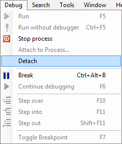

SharpDevelop 3 supports attaching the debugger to a running process.
From the Debug menu select Attach to Process.
The Attach to Process dialog will show the managed processes by default. Select the process and then either double click or click the Attach button to attach to the process.
When you have finished debugging you can detach from the process by selecting Detach from the Debug menu.
